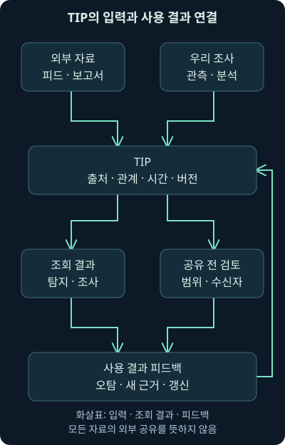
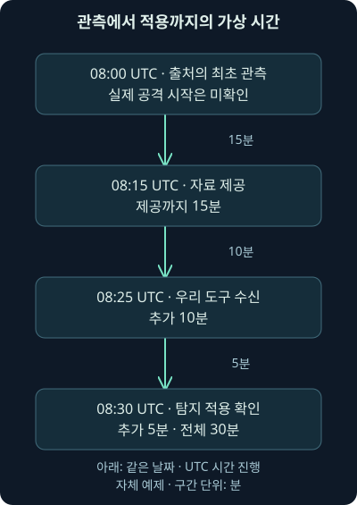
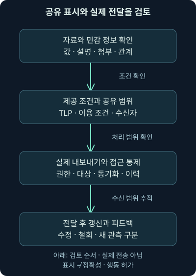

위협 정보 플랫폼·피드와 안전한 공유
첫째 날12강. 플랫폼의 저장·조회·교환과 피드 품질·지연·갱신, 디팽과TLP2.0의 안전한 공유 범위를 배웁니다.
1. 어제 확인한 단서를 오늘도 다시 조사한다면
가상 분석가가 메일의 의심 도메인을 조사했습니다. 다른 근무자는 그 결과를 찾지 못해 같은 검색을 다시 시작합니다. 세 번째 근무자는 외부 목록에서 같은 값을 찾아 차단을 요청했는데, 앞선 분석에서는 정상 공유 서비스와의 관계를 검토 중이었습니다. 값만 복사해 놓고 출처와 판단을 연결하지 않으면 이런 일이 생깁니다.
11강에서 질문·맥락·시각·출처를 연결했습니다. 이번 12강은 이를 위협 정보 플랫폼의 구조, 피드의 품질과 속도, 안전한 표현·교환·공유로 이어갑니다. 범위를 충분히 설명하기 위해 MISP의 자료 모델과 세부 흐름은 다음 13강, 자체 활용 실습은 그다음 회차로 나눴습니다.
기관·피드·활동·평가 숫자·시각은 모두 자체 가상 예제입니다. 뒤의 품질 계산 코드는 로컬에서 직접 실행했지만 실제 피드에 가입하거나 데이터를 가져오지 않았습니다. 플랫폼 설치·API 조회·외부 공유·도메인 접속·차단을 실제 수행한 결과가 아닙니다.
2. TIP는 조사 지식을 다시 찾고 연결하는 공간입니다
TIP, Threat Intelligence Platform은 위협과 관련된 관측 단서·분석·출처·관계를 저장하고 검색·교환하도록 돕는 플랫폼입니다. 같은 값이 어느 보고서와 어떤 맥락에 등장했는지 찾고, 새 조사와 이전 분석을 연결하는 데 사용할 수 있습니다.
도서관에 책이 많아도 제목·저자·분류·소장 위치가 제각각이면 원하는 근거를 찾기 어렵습니다. TIP도 주소 목록을 크게 만드는 것보다 어떤 자료와 주장을 어떻게 연결하는지가 중요합니다. 도서관 비유와 달리 여기서는 자료가 계속 갱신·철회되고 위험 판단이 달라지므로 시간과 버전도 함께 관리해야 합니다.
플랫폼이 보강·자동 요약·관계 추천을 제공하더라도 결과의 출처·적합성·불확실성을 검토하는 책임은 남습니다. “도구는 절대 분석하지 않는다”라고 기능을 좁히는 것도, “도구를 샀으니 검토된 정보가 생긴다”라고 기대하는 것도 피해야 합니다. 무엇을 자동으로 만들고 무엇을 사람이 확인하는지 제품별로 구분합니다.
3. 사건 관리·로그 검색과 맡는 질문이 다릅니다
9·10강의 사건 관리는 누가 무엇을 조사했고 어떤 조치와 결과가 남았는지를 추적합니다. SIEM은 여러 출처의 로그를 검색하고 탐지 결과를 만드는 역할입니다. TIP는 여러 사건과 외부 자료에서 얻은 단서·분석과 관계를 다시 사용할 수 있게 합니다. 기능이 한 제품 안에 있어도 역할은 구분할 수 있습니다.
가상 사건에서 files.example이 보였다면 SIEM은 해당 이름을 어떤 로그에서 찾았는지, 사건 관리는 무엇을 확인했고 다음 담당이 누구인지, TIP는 이 값이 어떤 기간·역할·보고서·판단과 연결되는지를 설명합니다. 서로의 ID와 원본 참조가 이어져야 중복 검색과 단정적인 복사를 줄일 수 있습니다.

그림에서 외부 자료가 들어오는 경로와 우리 조사에서 얻은 관측을 돌려주는 경로를 나누어 보세요. 들어온 자료는 검토를 거쳐 사용할 대상을 정하고, 나가는 자료는 공유 가능 범위와 수신자를 확인해야 합니다. 같은 시스템 안에 있다는 이유로 모든 원본 로그를 외부와 교환하지 않습니다.
4. 값과 설명을 함께 저장해야 합니다
기본 값으로는 IP 주소·도메인·URL·파일 이름·해시 등이 있습니다. 그러나 같은 주소도 피해 자산, 정상 중계 서비스, 의심 통신 상대라는 역할이 다를 수 있습니다. 값의 유형과 역할·출처·관측 시각·분석 이유·확신과 한계를 함께 저장해야 조회 결과를 해석할 수 있습니다.
자체 가상 자료의 source_ip라는 필드도 이름만 보고 공격자의 주소라고 정하지 않습니다. 원래 출처가 로그의 출발 주소를 뜻했는지, 분석자가 자료를 가져온 서버를 뜻했는지 확인해야 합니다. 값이 들어왔다는 사실보다 그 필드의 의미가 중요합니다.
| 저장할 관점 | 자체 예제 | 부족할 때 생기는 문제 |
|---|---|---|
| 유형과 원래 값 | domain, files.example | 도메인·URL·본문 문자열 혼동 |
| 역할과 관련 행동 | 가상 자료 전달 후보 | 정상·피해·의심 인프라 혼동 |
| 출처·근거·계보 | 보고서 R-1과 원본 참조 | 재배포를 독립 증거로 셈 |
| 시간·갱신·철회 | 관측 기간과 재검토 날짜 | 과거 정보를 현재 판정으로 사용 |
| 공유·사용 조건 | 수신 범위와 자료 이용 조건 | 허용되지 않은 재배포·조치 |
표의 항목을 무조건 하나의 텍스트 칸에 넣자는 뜻은 아닙니다. 검색·비교에 필요한 항목은 구조화하고, 설명과 원본 참조도 함께 보존합니다. 구조화는 정해진 필드와 관계로 값을 구분해 기계와 사람이 같은 의미로 읽도록 만드는 것입니다.
5. 더 복잡한 분석을 저장할 수 있나요?
한 프로그램에서 추출한 여러 서버 목록, 동작 주기, 설정의 출처와 파일 관계처럼 단순 주소 한 줄보다 복잡한 자료가 필요할 수 있습니다. 어떤 값이 같은 설정 묶음에 속하는지, 어느 파일에서 나온 것인지 잃지 않아야 합니다. 모든 문자열을 독립 악성 지표로 풀어 놓으면 관계가 사라집니다.
필드 추가와 객체·관계, 긴 분석 문서·첨부·변경 이력·검색 기능을 확인합니다. 객체는 관련 필드들을 하나의 의미 있는 묶음으로 다루는 구조이고 관계는 두 묶음이 어떻게 연결되는지 설명하는 연결입니다. 같은 이름의 필드가 다른 의미로 쓰이지 않도록 정의를 관리해야 합니다.
필요한 자료량과 검색 방식도 생각합니다. 수십 개 값을 수동으로 보는 환경과 여러 출처의 대량 갱신을 비교하는 환경은 요구가 다릅니다. 지표 수, 관계 수, 과거 버전·보존, 동시 검색과 연동 부하를 실제 질문으로 시험해야 합니다.
6. 사람의 검색과 도구의 API를 함께 봅니다
API, Application Programming Interface는 다른 프로그램이 정해진 요청과 응답으로 기능을 사용하도록 하는 접점입니다. TIP 검색을 사람이 화면에서 할 수도 있고 SIEM·사건 관리·자동화 도구가 API로 조회할 수도 있습니다. 화면이 편하다는 것과 API가 필요한 필드와 속도를 제공한다는 것은 별도 검사입니다.
가상 조회 조건을 “유형은 도메인, 값은 정확히 일치, 해당 관측 시각에 적용 가능한 정보, 현재 사용자가 볼 수 있는 자료”로 정해 보세요. 유형은 잘못된 비교를 줄이고, 정확한 값은 포함 문자열의 혼동을 줄이며, 시간과 권한은 적용 범위를 제한합니다. 이는 설명용 조건이며 특정 제품의 실행 가능한 필터 문법이 아닙니다.
API 응답이 비어도 자료가 전혀 없다고 단정하지 않습니다. 권한·조직·공유 범위·시간 필터·제외 설정·페이지 나눔·가져오기 지연을 확인합니다. 페이지 나눔, pagination은 결과를 여러 부분으로 나눠 돌려주는 방식입니다. 첫 페이지만 보고 전체 결과라고 처리하면 빠뜨릴 수 있습니다.
7. 자동 입력에도 출처와 실패 상태가 필요합니다
도구가 같은 자료를 재시도할 때 중복 사건이나 지표를 계속 만들지 않도록 원본 ID·출처·버전을 연결해야 합니다. 반대로 값이 같다는 이유로 서로 다른 출처의 설명을 하나로 덮어쓰면 중요한 차이를 잃습니다. 동일 관측, 정보 개정, 독립된 추가 근거를 구분합니다.
입력 실패·인증 실패·전송 제한·부분 성공은 정상적으로 자료가 없는 경우와 다릅니다. 마지막 성공 시각, 처리한 범위, 남은 작업과 재시도 결과를 관측할 수 있어야 합니다. 자동화는 오류 없이 모든 자료가 들어온다는 보장이 아닙니다.
자동 입력된 값이 즉시 경보나 차단으로 이어지는지도 따로 확인합니다. 외부 피드를 구독했다고 모든 일치가 자동 탐지되는 것은 아닙니다. 어떤 유형을 어떤 엔진이 어떤 설정으로 검사하는지와, 단순 보관·조회용 값인지 탐지용으로 선택한 값인지를 나눕니다.
8. 교환 형식과 전달 방법을 나눕니다
CSV·JSON·제품 고유 형식·표준 위협 정보 형식이 교환에 사용될 수 있습니다. CSV는 행과 열의 텍스트 자료 형식이고 JSON은 이름과 값을 구조적으로 표현하는 형식입니다. 형식 이름이 같아도 필드 이름·유형·관계·시간·공유 표시의 의미가 같다는 보장은 없습니다.
2026년 11월 4일 확인한 OASIS STIX 2.1 표준은 위협 정보의 객체와 관계를 표현하는 방법을 정의합니다. STIX는 Structured Threat Information Expression입니다. TAXII 2.1 표준은 위협 정보 교환을 위한 응용 계층 프로토콜이며 Trusted Automated Exchange of Intelligence Information의 약자입니다. 각각 2021년의 확정 표준을 확인했으며 초안 문서와 혼동하지 않습니다.
간단히 말해 무엇을 어떤 의미로 표현하는지와 어떻게 가져오고 전달하는지는 다른 문제입니다. “STIX 지원”이라는 문구만으로 모든 객체·관계·표시가 왕복 보존되는지 알 수 없습니다. 버전·지원 범위와 빠지는 필드를 대표 자료로 시험하고, 형식 검증 통과를 정보의 진실성 검증으로 해석하지 않습니다.
9. 제품보다 사용 흐름을 먼저 시험합니다
자체 호스팅 공개 소스 플랫폼과 상용·관리형 서비스 중 어느 쪽이든 운영 부담·지원·통합·자료 모델·공유 통제를 확인해야 합니다. 무료 소프트웨어도 서버·업데이트·백업·운영 인력 비용이 들 수 있습니다. 상용 플랫폼 이용료와 분석 보고서나 피드 구독료가 같은 항목인지도 따로 봅니다.
2026년 11월 4일 확인한 MISP 기능 안내와 라이선스 안내는 위협 자료의 저장·교환·관계 분석 기능과 구성 요소별 라이선스를 설명합니다. 핵심 소프트웨어는 AGPL-3.0-or-later이며 지식 자료·연동 라이브러리의 조건은 별도입니다. 다음 13강에서 자료 모델을 자세히 다룹니다.
OpenCTI의 에디션 문서도 같은 날짜에 확인했습니다. Community Edition은 Apache 2.0, Enterprise Edition은 별도 라이선스 조건으로 구분됩니다. 옛 자료의 “새로운 무료 플랫폼”이라는 소개만으로 현재 모든 기능·운영 조건을 판단하지 않습니다. 이번 강의에서 두 제품을 설치하거나 성능을 비교하지 않았습니다.
교재의 과거 상용 제품 예시는 선택지가 여러 유형이라는 점을 이해하는 자료입니다. 제품 이름·소유 회사·상품 묶음은 바뀔 수 있으므로 오래된 판매 목록을 현재 구매 추천으로 재사용하지 않습니다. 실제로는 가상 보고서 입력, 정확한 조회, 관계 연결, 개정·철회·권한·내보내기와 다른 도구의 사용까지 한 흐름으로 시험해야 합니다.
10. 피드는 무엇을 계속 보내주나요?
피드, feed는 지표·관측·보고서 등 특정 자료를 계속 제공하거나 갱신하는 공급 경로입니다. 공개 자료와 제한된 공동체·유료 자료가 모두 있을 수 있습니다. 공개라는 말이 정보가 정확하다는 뜻도, 제한된 접근이라는 말이 우리 조직에 적합하다는 뜻도 아닙니다.
먼저 내용의 종류와 범위를 봅니다. 파일 해시 중심인지, 주소·도메인인지, 행위·취약 조건·분석 보고서도 포함하는지 알아야 질문에 맞는 출처를 고를 수 있습니다. 피드가 없다고 그 활동이 없는 것도 아니며 피드에 있다는 이유로 우리 환경에서 관측되었다고 하지 않습니다.
분석한 결과물과 관측값 목록도 구별합니다. 목록이 유용할 때가 있지만 왜 포함했고 언제까지 적용하며 틀렸을 때 어떻게 고치는지 알아야 합니다. 제공자의 선택 기준과 철회·갱신 방식이 우리 탐지·조사 흐름과 맞는지를 확인합니다.
11. 우리에게 관련 있는 자료인지부터 묻습니다
가상 조직이 외부 문서 서비스 계정 오용을 줄이려는데 특정 파일 형식의 오래된 해시만 많이 제공받는다고 합시다. 일부 조사에는 도움이 될 수 있어도 핵심 질문을 충분히 답하지 못할 수 있습니다. 조직의 업무·기술·노출 경로와 예상되는 행동에 얼마나 연결되는지 평가해야 합니다.
관련성은 확인해야 할 대상을 좁히는 기준이지 다른 분야 자료를 전부 무가치하다고 버리는 기준은 아닙니다. 예상과 다른 행동이나 재사용되는 기반 시설이 있을 수 있습니다. 필요를 정하고 대표 사례로 효과를 검토하되, 현재 가정이 놓치는 범위도 남깁니다.
제공받는 양, 지원 필드, 연동 형식, 비용, 이용·재배포 조건과 수집 가능한 우리 자료를 함께 봅니다. 많이 받았는데 검색·검증할 능력이 없으면 경보 부담만 늘 수 있습니다. 많은 피드를 구독하는 것 자체가 방어 성숙도의 점수는 아닙니다.
12. 정확성과 포괄성에는 서로 다른 질문이 있습니다
의심 가능성이 넓은 자료를 많이 받으면 새로운 단서를 찾을 가능성이 있지만 정상 활동도 더 걸릴 수 있습니다. 매우 엄격하게 확인한 자료만 받으면 오탐이 적어질 수 있어도 알 수 있는 활동 범위가 좁아질 수 있습니다. 어느 쪽이 언제나 좋다고 정하지 말고 용도를 나눕니다.
예를 들어 넓은 단서는 조사 후보를 찾는 데 쓰고 자동 조치에는 추가 조건을 요구할 수 있습니다. 반대로 확신이 높은 자료도 오래되었거나 공유 서비스 전체를 가리키면 그대로 차단하기 어렵습니다. 정보의 품질과 개별 조치의 적절성은 별도의 판단입니다.
피드 기반 경보가 얼마나 실제 위험을 설명했는지 확인하되, 판단 단위가 원본 경보인지 중복을 묶은 활동인지 사건인지 먼저 정합니다. 아직 검토하지 않은 결과를 정상으로 세면 정확성이 왜곡됩니다. 받은 목록만으로 놓친 모든 공격의 수를 알 수 없으므로 재현율도 쉽게 계산할 수 없습니다.
13. 검토되지 않은 경보가 섞인 두 피드를 비교하기
가상 평가에서 판단 단위는 중복을 제거한 활동 한 건입니다. 피드 A로 만든 경보 40건 중 실제 위협으로 정한 것이 18건, 정상으로 설명한 것이 12건, 아직 검토 중인 것이 10건이라고 합시다. B는 20건 중 위협 6건, 정상 2건, 검토 중 12건입니다. 정답은 이 자체 예제를 위해 설정했습니다.
| 자체 피드 | 위협 확인, 건 | 정상 확인, 건 | 검토 중, 건 | 전체, 건 |
|---|---|---|---|---|
| A | 18 | 12 | 10 | 40 |
| B | 6 | 2 | 12 | 20 |
검토 완료분의 정밀도는 A가 18/(18+12)=60%, B가 6/(6+2)=75%입니다. 정밀도, precision은 경보 중 판단 대상이 실제로 맞은 비율입니다. 여기서는 악성·위협 여부를 판단 대상으로 정했습니다. 그러나 B는 전체 중 40%만 검토되었고 A는 75%를 검토했으므로 이 값만으로 B가 더 좋다고 결론 내리기 어렵습니다.
아래 코드에서 tp는 위협으로 확인한 경보 수, fp는 정상으로 설명한 경보 수, pending은 미검토 수입니다. 미검토 결과를 모두 정상으로 보는 경우와 모두 위협으로 보는 경우를 각각 계산해 전체 경보 기준의 가능한 범위를 구합니다. 통계적 신뢰구간을 추정한 것은 아닙니다.
feeds = {"A": (18, 12, 10), "B": (6, 2, 12)}
for name, (tp, fp, pending) in feeds.items():
reviewed = tp + fp
total = reviewed + pending
assert reviewed > 0 and total > 0
precision = tp / reviewed * 100
coverage = reviewed / total * 100
low = tp / total * 100
high = (tp + pending) / total * 100
print(f"{name}: reviewed precision={precision:.1f}%, "
f"review coverage={coverage:.1f}%, "
f"all-alert range={low:.1f}-{high:.1f}%")reviewed는 검토 완료 수, total은 전체 경보 수입니다. 두 분모를 구분하는 이유는 검토가 많이 남은 상태의 높은 정밀도를 완성된 평가처럼 보지 않기 위해서입니다. assert는 분모가 0이면 계산을 멈추고, :.1f는 소수 첫째 자리까지 표시합니다. 이 코드의 입력은 제시한 비음수 정수라는 조건입니다.
로컬 Python 3.12.14에서 직접 실행한 출력은 다음과 같습니다. A의 전체 범위는 45~70%, B는 30~90%입니다. 실제 피드의 품질·공격 발생률을 측정한 숫자가 아니며, 검토 순서가 심각한 사건에 치우치는 등의 선택 편향도 별도로 평가해야 합니다.
A: reviewed precision=60.0%, review coverage=75.0%, all-alert range=45.0-70.0%
B: reviewed precision=75.0%, review coverage=40.0%, all-alert range=30.0-90.0%14. 빠르다는 말에도 시작과 끝이 필요합니다
가상 제공자가 08:00에 활동을 처음 관측했고 08:15에 자료를 제공했습니다. 우리 도구가 08:25에 가져왔고 탐지 적용 확인은 08:30입니다. 이 조건에서 제공까지 15분, 가져오기까지 추가 10분, 적용까지 추가 5분입니다. 처음 관측에서 우리 적용까지는 30분입니다.

그림의 08:00도 실제 공격 시작을 보장하지 않습니다. 다른 출처에서 더 일찍 알았을 수 있고 시계와 시간대가 다를 수도 있습니다. 보고서 발행 시각·수신 시각만으로 모든 지연을 같은 지표로 만들지 않습니다. 시각이 없는 자료를 0분으로 집계해서도 안 됩니다.
또한 목록을 가져온 것과 탐지·조치가 활성화된 것은 다릅니다. 일치 조건·검사 위치·필터가 적용되었는지 확인해야 합니다. 과거 로그를 재검색해 이전 관측을 찾을 수도 있으므로, 지연이 생겼다는 이유로 과거 조사 가치까지 사라지는 것은 아닙니다.
15. 갱신과 철회도 공급 품질의 일부입니다
도메인이 다른 주체로 넘어가거나 공유 서비스의 악용이 종료되었다면 오래된 분류가 계속 정상 업무를 방해할 수 있습니다. 추가 속도뿐 아니라 수정·철회가 얼마나 빨리 전달되고 우리 도구에 반영되는지도 봅니다. 이미 배포한 탐지·예외·차단 항목과 연결되지 않으면 원본 목록만 바뀔 수 있습니다.
같은 단서가 갱신되면 원출처·버전·변경 이유·적용 시각을 남깁니다. 과거 조사 재현에 필요한 기록과 현재 조치에 사용할 목록을 구분하면, 과거 근거를 잃지 않으면서 잘못된 현재 적용을 줄일 수 있습니다.
공급자가 맞춤형 경고나 오탐 수정 창구를 제공한다면 우리 평가 결과를 돌려줄 수 있습니다. 다만 내부 사용자·자산·원본 로그를 그대로 외부에 넘기지 말고 공유 가능한 최소 자료와 근거, 수신자·목적을 확인합니다. 이 강의에서 실제 피드 제공자에게 연락하지 않았습니다.
16. 위험한 값을 보고서에서 비활성화해 표시하기
많은 도구는 URL이나 주소를 자동 링크로 만들거나 미리보기를 가져옵니다. 디팽, defang은 실수로 접속되지 않도록 표현을 바꾸는 관행입니다. 자체 예시 https://files.example/a를 hxxps://files[.]example/a처럼 적는 방식이 있습니다. 여기의 도메인은 실제 악성이 아닌 문서용 예제입니다.
대괄호나 스킴 변경은 암호화·접근 통제·격리를 제공하지 않습니다. 일부 도구가 다시 원래 형태로 복원하거나 자동 처리할 수 있으므로 표시만으로 완전한 안전을 보장하지 않습니다. 실제 의심 값을 사용한 시험을 일상 브라우저에서 접속해 보라는 뜻도 아닙니다.
리팽, refang은 비교나 처리에 필요할 때 원래 표현으로 복원하는 작업입니다. 표시용 값과 정규화한 비교용 값을 구분하고, 복원한 값을 외부 조회·링크 미리보기로 자동 전송하는 경로가 없는지 확인합니다. 원본 표기·유형·변환 규칙을 보존해야 잘못된 교환과 비교를 찾기 쉽습니다.
17. 공유 전에 무엇이 나가는지 확인합니다
위협 정보에도 피해 조직 이름, 내부 주소, 사용자, 비공개 취약 조건과 수집 방법 같은 민감 정보가 섞일 수 있습니다. 주소 몇 개만 내보내는 것처럼 보여도 설명·첨부·관계·원본 링크를 통해 내부 정보가 전달될 수 있습니다. 공유 대상과 실제 내보내기 결과를 함께 확인해야 합니다.
공유 가능한 범위, 사용 목적, 재배포 조건, 제공자와 수신자의 역할을 정합니다. 권한 없는 재배포를 막는 접근 통제와 전달 기록도 필요합니다. 공개 보고서에서 가져왔다는 사실만으로 붙인 내부 분석·원본 자료까지 모두 공개 가능해지는 것은 아닙니다.

그림에서 표시를 붙이는 단계와 실제 전달을 통제하는 단계를 분리해 읽어보세요. 표시가 적절해도 접근 권한·동기화 대상·첨부 포함 범위가 잘못되어 있으면 의도와 다른 공유가 생길 수 있습니다.
18. TLP의 색은 악성의 심각도가 아닙니다
TLP, Traffic Light Protocol은 민감한 정보를 누구에게 더 전달할 수 있는지 표현하는 공유 표시 체계입니다. 2026년 11월 4일 확인한 FIRST의 TLP 2.0 정의는 RED·AMBER·GREEN·CLEAR와 AMBER의 엄격한 범위를 설명합니다. 오래된 TLP:WHITE 표기는 2.0에서 TLP:CLEAR로 바뀌었으므로 옛 화면의 명칭을 현재와 구별합니다.
| TLP 2.0 표시 | 전달 범위를 읽는 핵심 |
|---|---|
| TLP:RED | 특정 정보 교환의 개별 수신자에게 제한, 다른 사람에게 재전달하지 않음 |
| TLP:AMBER+STRICT | 수신 조직 안에서 필요한 사람에게 제한 |
| TLP:AMBER | 수신 조직과 그 고객 중 필요한 사람에게 제한 |
| TLP:GREEN | 해당 공동체 안에서 공유, 공개 채널로 배포하지 않음 |
| TLP:CLEAR | 일반 저작권 규칙 등을 전제로 공유 제한 없음 |
조직·공동체·고객의 범위는 문서의 정의와 원제공자의 조건을 확인합니다. TLP:CLEAR를 붙였다고 자료의 정확성·저작권 이용·공격 대상에 대한 행동 권한이 모두 해결되는 것은 아닙니다. TLP는 위험 등급이나 네트워크 차단 정책도 아닙니다.
2026년 11월 4일 확인한 FIRST의 사용 사례 안내는 AMBER+STRICT 자료를 원제공자의 허가 없이 외부 조직이나 공유 그룹의 다른 조직으로 보내지 않도록 설명합니다. 같은 공유 공동체에 속했다는 이유로 이 범위를 넓히지 않습니다. 실제 데이터의 재배포는 그 자료의 조건과 조직 절차에 맞춰 판단합니다.
19. 동기화와 자동 공유는 별도 검증합니다
동기화는 여러 시스템이 자료와 변경을 주고받아 상태를 맞추는 처리입니다. 한 플랫폼에서 자료를 수정하거나 공유 표시를 바꾸면 연결된 다른 시스템에 무엇이 반영되는지 확인해야 합니다. 읽기 권한이 있다고 임의 재배포 권한까지 있는 것은 아닙니다.
가상 공유 설정을 시험할 때는 외부 전송 없는 격리된 자체 자료로 먼저 확인할 수 있습니다. 대상 조직·자료 선택·첨부·표시·갱신·철회·권한 변경을 점검하고, 기대하지 않은 자료가 포함되면 운영 적용을 멈추고 원인을 고칩니다. 이번 강의에서 실제 동기화나 외부 공유를 실행한 것은 아닙니다.
공유받은 값이 우리 환경의 관측으로 자동 표시되지 않는지도 확인합니다. 제공자의 발견과 수신자의 발견은 다른 사실입니다. 출처·Sighted·조사 상태를 섞으면 외부 보고서를 받은 것만으로 내부 침해 통계를 만들게 됩니다.
20. 산업 공동체의 정보는 어떻게 활용하나요?
ISAC, Information Sharing and Analysis Center와 ISAO, Information Sharing and Analysis Organization은 정보를 공유·분석하는 공동체의 형태를 가리킵니다. 같은 산업과 운영 환경의 경험을 통해 관련성 높은 단서를 얻을 수 있지만 모든 자료가 우리 질문에 맞거나 같은 이용 조건을 갖는 것은 아닙니다.
의료·금융·공공·선거·물·항공·정보기술·연구교육·유통숙박·해운·가스·석유·우주 등 다양한 분야의 공유 조직이 교재의 사례로 등장합니다. 이를 현재 누구나 가입할 수 있는 추천 목록으로 읽지 않습니다. 지역·분야·자격과 서비스·비용·공유 조건은 실제 조직에서 확인해야 합니다.
2026년 11월 4일 미국 National Council of ISACs의 회원 안내를 확인했습니다. 이런 공식 안내를 통해 현재의 조직과 역할을 찾아볼 수 있으나 개별 가입 자격·자료 접근을 이번 강의에서 검증한 것은 아닙니다. 실제로 가입하거나 외부 메시지를 보내지도 않았습니다.
21. 평가 결과를 다시 수집·분석에 돌려줍니다
피드별 일치 건수만 보고하지 말고 어떤 유형과 기간의 자료에서 무엇을 확인했는지 남깁니다. 정상으로 설명된 이유, 검토 중인 비율, 중복과 출처 계보, 갱신·적용 지연을 함께 보면 어떤 자료가 실제 의사결정에 도움이 되는지 보입니다.
의심 활동을 놓쳤다면 단서가 피드에 없었는지, 가져오기가 늦었는지, 검사 위치가 보지 못했는지, 규칙이 비활성화되었는지 나눠 봅니다. 반대로 경보가 많다면 공유 기반 시설·잘못된 유형·지나친 포함 검색·중복 원본 같은 원인을 검토합니다. 외부 목록의 품질만으로 모든 문제를 설명하지 않습니다.
다음 13강에서는 MISP의 event·attribute·태그·분류·관측 보고와 관계를 배웁니다. 같은 해시로 관련 자료를 찾되 공격자 귀속을 자동으로 확정하지 않고, 보고서 링크와 탐지 대상 값을 구분하는 실제 자료 구조의 질문으로 이어가겠습니다.
22. 복습과 바로 읽는 해설
질문 1. TIP가 있으면 사건 관리와 로그 검색의 역할도 사라질까요?
해설: 제품이 통합할 수는 있어도 관리하는 질문은 다릅니다. 담당·조치·상태, 원본 활동의 검색, 재사용할 단서·분석·관계를 구분하고 참조를 연결해야 합니다.
질문 2. 자동으로 들어온 모든 값을 탐지·차단에 써도 될까요?
해설: 참고 링크나 정상·피해 자산일 수 있습니다. 유형·역할·시간·근거와 탐지용 선택 여부, 조치 조건을 확인해야 합니다. 수집과 탐지 활성화도 별도 단계입니다.
질문 3. API 검색 결과가 비었으면 플랫폼에 자료가 없나요?
해설: 권한·조직·필터·페이지 나눔·수집 지연 때문에 보이지 않을 수 있습니다. 조회 조건과 실제 처리 상태를 확인한 범위 안에서만 미관측이라고 기록합니다.
질문 4. STIX와 TAXII를 지원하면 모든 맥락이 보존되나요?
해설: 버전과 지원 객체·관계·표시, 빠지는 필드를 시험해야 합니다. 자료 표현과 전달은 다른 문제이며 형식 통과는 정보 내용의 검증이 아닙니다.
질문 5. B의 완료분 정밀도가 75%이므로 A의 60%보다 우수한가요?
해설: B는 전체의40%만 검토되었습니다. 미검토 결과와 평가 단위·선택 편향을 보지 않고 순위를 정할 수 없습니다. 관련성·속도·포괄성과 실제 사용 목적도 함께 봐야 합니다.
질문 6. B의 전체 경보 기준 가능한 범위는 왜30~90%인가요?
해설: 20건 중 확인된 위협6건만 위협이면6/20=30%이고 미검토12건이 모두 위협이면18/20=90%입니다. 미검토를 임의로 정상 처리하지 않으려는 조건 계산이며 통계적 신뢰구간은 아닙니다.
질문 7. 08:25에 피드를 가져왔으니 그때부터 탐지되나요?
해설: 적용과 활성화·검사 위치·조건을 확인해야 합니다. 자체 예제의 적용 확인은08:30입니다. 수신·저장·탐지와 실제 조치의 시점을 나눕니다.
질문 8. 갱신된 목록에서 주소가 사라졌으니 과거 일치도 지울까요?
해설: 과거 조사에는 당시 버전과 의미가 필요합니다. 현재 적용 목록과 과거 근거를 구분하고 갱신·철회 이유와 시각을 남겨야 합니다.
질문 9. 디팽한 값은 암호화되거나 외부 전송이 막힌 것인가요?
해설: 표현을 바꾼 것일 뿐입니다. 도구가 복원·미리보기·자동 조회할 수 있으므로 접근 통제와 실제 처리 경로를 별도로 확인합니다.
질문 10. TLP:AMBER+STRICT 자료를 같은 공유 그룹의 다른 회사에 보내도 될까요?
해설: 원제공자의 허가 없이 외부 조직으로 범위를 넓히지 않습니다. 같은 공동체라는 사실과 수신 조직 내부라는 제한은 다릅니다. 자료의 원래 조건을 확인해야 합니다.
질문 11. TLP:CLEAR이면 자료가 정확하고 어떤 행동도 허용되나요?
해설: 공유 범위를 나타내는 표시입니다. 정확성·공격 가능성·저작권 이용·조치 권한을 대신 판단하지 않습니다. 관련 조건과 근거는 별도로 확인합니다.
질문 12. 외부 자료를 받자마자 환경 관측 표시를 켜면 어떤 문제가 생기나요?
해설: 제공자의 관측을 우리 환경의 사실로 바꾸게 됩니다. 원출처와 수신 사실, 내부에서 실제 발견한 위치·시간·행위를 나눠야 허위 내부 침해 판단과 잘못된 집계를 막을 수 있습니다.